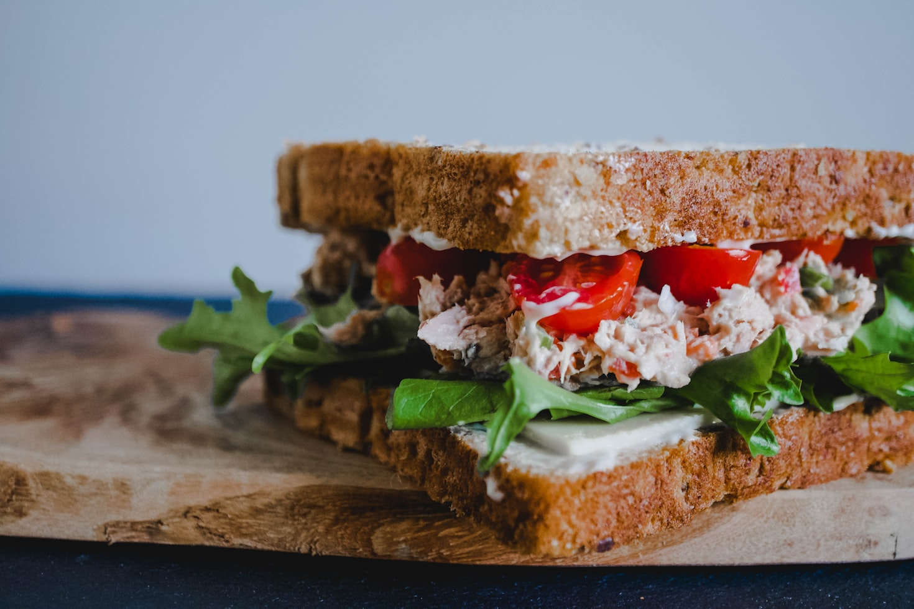

Homepage
Tuna Sandwich

Description
A tuna sandwich is a quick and easy meal made with canned tuna mixed with mayonnaise
and other ingredients, served between slices of bread. It's a popular choice for lunch or a
light snack.
Ingredients
- 1 can of tuna, drained
- 2 tablespoons mayonnaise
- 1 tablespoon diced celery
- 1 teaspoon lemon juice
- Salt and pepper to taste
- 2 slices of bread
- Lettuce leaves (optional)
- Tomato slices (optional)
Instructions
- In a bowl, combine the drained tuna, mayonnaise, diced celery, lemon juice, salt, and pepper. Mix well.
- Toast the slices of bread if desired.
- Spread the tuna mixture evenly onto one slice of bread.
- Add lettuce leaves and tomato slices on top of the tuna mixture, if using.
- Place the second slice of bread on top to complete the sandwich.
- Cut the sandwich in half and serve immediately.